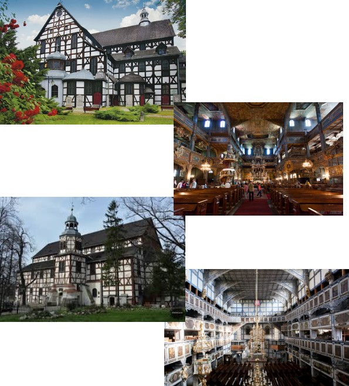

KOŚCIOŁY POKOJU W JAWORZE I ŚWIDNICY

Kościoły Pokoju w Jaworze i Świdnicy, największe w Europie budowle sakralne o konstrukcji szkieletowej, zostały wzniesione na Śląsku w połowie XVII w., w następstwie Pokoju Westfalskiego, regulującego kwestie religijne. Ograniczone warunkami politycznymi i materiałowymi, świadczą o poszukiwaniu wolności religijnej i przyjmują formy wyrazu właściwe kościołom katolickim, lecz mało rozpowszechnione w tradycji luterańskiej.